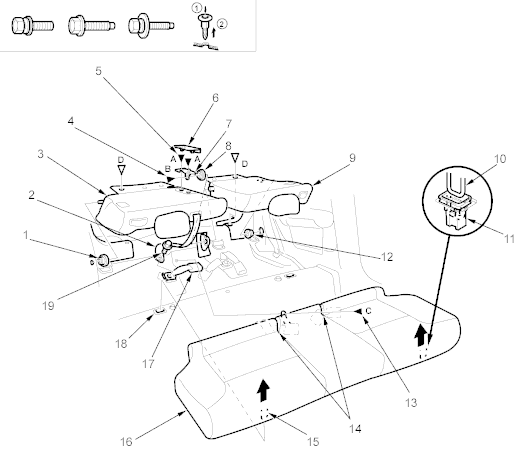

Seats
Rear Seat Removal/Installation
|
20-40 |
|
NOTE: Take care not to scratch the body or tear the seat covers.
Remove the rear seat as shown. To remove the seat-back, remove the front portion of the trunk floor mat (see page 20-31).
Install the seat in the reverse order of removal, and note these items:
- Before installing the centre anchor bolts on the seat-back with the centre shoulder belt, make sure there are no twists or kinks in the belt.
- Make sure the seat-backs lock securely.
Fastener Locations
A  : Bolt, 2 B : Bolt, 1 C : Bolt, 1 D
: Bolt, 2 B : Bolt, 1 C : Bolt, 1 D  : Clip, 2
: Clip, 2
 |
- PIVOT BUSHING
- CENTRE BELT
(For some models)
- RIGHT SEAT-BACK
- CENTRE PIVOT BOLT
8 x 1.25 mm
22 Nm (2.2 kgf/m, 16 lbf/ft)
- 8 x 1.25 mm
22 Nm (2.2 kgf/m, 16 lbf/ft)
- HINGE COVER
- SEAT-BACK CENTRE HINGE
- BUSHING
- LEFT SEAT-BACK
- HOOK
- CLIP
- PIVOT BUSHING
- 6 x 1.0 mm
9.8 Nm (1.0 kgf/m, 7.2 lbf/ft)
- SLITS
- HOOK
- SEAT CUSHION
- SEAT BELT BUCKLE
- CLIP
- CENTRE ANCHOR BOLT
7/16-20 UNF
32 Nm (3.3 kgf/m, 24 lbf/ft)
|